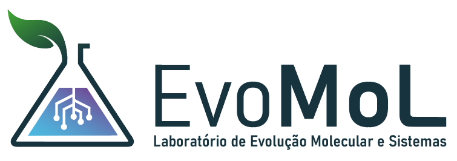

Sobre o grupo:

EvoMol-Lab
O Laboratório de Evolução de Moléculas e Sistemas (EvoMol-Lab) é um dos grupos de pesquisa associados ao Centro Multiusuário de Bioinformática (BioME), do Instituto Metrópole Digital (IMD) da Universidade Federal do Rio Grande do Norte (UFRN). O EvoMol-Lab tem como missão estudar processos evolutivos que atuam em moléculas, complexos supramoleculares e sistemas (vias e redes de interação) e os efeitos estruturais e funcionais provocados pela variação genética, utilizando abordagens da Bioinformática, modelagem molecular e análise evolucionária de sequências. Seu Principal Investigador é o Prof. João Paulo MS Lima, Professor Associado IV da UFRN.
About me:
Profissional

Sou Biólogo (Bacharel) formado pela Universidade Federal do Ceará (UFC) (2000), Especialista em Bioinformática (2002), Mestre (2003) e Doutor em Bioquímica (2007). Atuei científicamente nas áreas de Bioquímica, Biologia Molecular e Bioinformática. Minha principal linha de pesquisa hoje é a Evolução de Moléculas e Vias Metabólicas, utilizando abordagens da Bioinformática/Bioinformática Estrutural e da Filogenia Molecular. Atualmente sou Professor Associado do Departamento de Bioquímica, Centro de Biociências da Universidade Federal do Rio Grande do Norte, membro permanente do Programa de Pós-Graduação em Bioinformática (PPg-Bioinfo-IMD/UFRN), pesquisador (P.I.) do Centro Multiusuário de Bioinformática (CMB/IMD/UFRN) e pesquisador associado do Instituto de Medicina Tropical do RN (IMT-RN).
Pessoal
Pai de humanos e de cães. Cientista, ciclista amador, entusiasta do gravel e aspirante a triatleta.
Mastodon: @jpmslima@mstdn.science